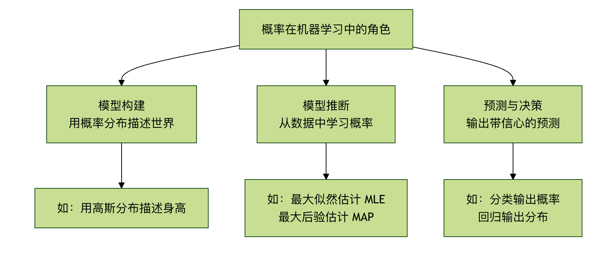

確率的思考
想像してみてください。友人に猫と犬の写真を見分ける方法を教えているとします。あなたは「この写真は100%猫だ」とは言わず、「この写真は90%の確率で猫だと思います。なぜなら尖った耳とひげがあるからです」と言うかもしれません。このような可能性の表現こそが確率的思考の中核です。
現実世界では、機械学習モデルが扱うデータはほぼ常に不確実性に満ちています。画像はぼやけているかもしれませんし、音声にはノイズが含まれているかもしれませんし、ユーザーの行動は予測しにくいものです。確率は、この不確実性を記述・定量化・処理するための厳密な数学的言語を提供します。それは高度なモデル（ベイジアンネットワーク、ガウス過程など）の基盤であるだけでなく、モデルの出力を理解し、予測の確信度を評価し、頑健な意思決定を行うための鍵でもあります。
要するに、確率的思考とは推測を定量化可能な確信へと変える橋であり、機械学習がハードコードされたルールから知的推論へと進む重要な一歩です。
中核となる確率概念のクイック入門
機械学習の応用を深く掘り下げる前に、いくつかの基礎的な確率概念を確立する必要があります。
1. 確率とは何か？
確率は、ある事象が発生する可能性の尺度であり、0から1の間の値を取ります。
P(A) = 0：事象 A不可能が発生する。P(A) = 1：事象 A必然的に発生する。0 < P(A) < 1：事象 A がある程度の可能性を持って発生する。
機械学習では、事象とは例えば以下のようなものです：この画像が猫である、ユーザーが明日この広告をクリックする、次の単語がこんにちは。
2. 条件付き確率：世界は互いに関連している
条件付き確率 P(A|B)は、事象 Bがすでに発生したという条件の下で、事象 A が発生する確率を表します。これは機械学習において極めて重要な概念です。
身近な例え：
P(下雨)：今日雨が降る一般的な確率（事前確率）。P(下雨 | 乌云密布)：すでに「暗雲が立ち込めている」のを見たという条件の下で、今日雨が降る確率（事後確率）。明らかに、後者の確率の値の方が高くなります。
公式：
P(A|B) = P(A 且 B) / P(B)，ただしP(B) > 0。
3. ベイズの定理：結果から原因を逆算する
ベイズの定理は条件付き確率の見事な応用であり、私たちに次のことを教えてくれます。どのようにして新しい証拠（データ）を用いて、ある仮説に対する信念を更新するか。
公式：
P(假设 | 数据) = [ P(数据 | 假设) * P(假设) ] / P(数据)
この「魔法の公式」を分解してみましょう：
P(假设)：事前確率。データを何も見る前の、仮説に対する初期の信念です。- 例：メールを受け取る前、任意のメールがスパムメールである確率は30%だと考えます。
P(数据 | 假设)：尤度。仮説が正しい場合、現在のデータの束を観測する可能性がどれだけあるか。- 例：あるメールが本当にスパムメールならば、その中に「無料」「当選」といった単語が出現する確率はどの程度高いか。
P(数据)：エビデンス（証拠）。現在のデータを観測する全体的な確率であり、通常は正規化定数です。P(假设 | 数据)：事後確率。データを観測した後の、仮説に対する更新された信念です。これが私たちが最終的に目指す目標です！- 例：メールに「無料」「当選」という単語が含まれているのを見た後、このメールがスパムメールである更新後の確率は95%です。
ベイズの定理の真髄：それは私たちの事前知識（P(假设)）と観測されたデータ（P(数据|假设)）を組み合わせて、より正確な更新後の認識（P(假设|数据)）。
第二部：機械学習における確率の3つの役割
確率的思考は機械学習のあらゆる側面に浸透しており、主に以下の3つの役割を果たします：

役割1：モデル構築 —— 確率で世界を記述する
多くの機械学習モデルは本質的に確率モデル。観測されたデータは、何らかの潜在的な確率分布から生成されたと仮定します。
例1：ロジスティック回帰これは直接確率値を出力します。二値分類問題（猫/犬）の場合、ロジスティック回帰モデルは「これは猫だ」とだけ言うのではなく、次のように出力します。P(类别=猫 | 图像数据)=0.9、モデルはこれは猫であると90%の確信を持っていることを示します。
例2：単純ベイズ分類器ベイズの定理を直接適用して分類を行います。特徴量が互いに独立であると仮定し、次を計算します。P(垃圾邮件 | 词1， 词2...)、そして確率がより高いカテゴリを選択します。
実例
# 假设我们已从数据中统计出以下概率（似然和先验）
P_单词_给定_垃圾= {"免费": 0.8, "会议": 0.1} # 在垃圾邮件中，"免费"出现的概率
P_单词_给定_正常= {"免费": 0.1, "会议": 0.9} # 在正常邮件中，"会议"出现的概率
P_垃圾= 0.3 # 先验概率：任意邮件是垃圾邮件的概率
P_正常= 0.7 # 先验概率：任意邮件是正常的概率
# 对于一封包含"免费"和"会议"的邮件，计算它是垃圾邮件的后验概率（简化计算）
# 根据贝叶斯公式（忽略证据分母，因为比较时抵消）
score_垃圾=P_单词_给定_垃圾["免费"]* P_单词_给定_垃圾["会议"]* P_垃圾
score_正常=P_单词_给定_正常["免费"]* P_单词_给定_正常["会议"]* P_正常
print(f"属于垃圾邮件的得分: {score_垃圾:.4f}")
print(f"属于正常邮件的得分: {score_正常:.4f}")
ifscore_垃圾>score_正常:
print("预测：这是一封垃圾邮件。")
else:
print("预测：这是一封正常邮件。")
役割2：モデルの推論と学習 —— 最も可能性の高い説明を探す
データから、それらのデータを最も可能性高く生成する確率モデル（すなわちモデルのパラメータを学習すること）をどう見つけるか？ ここに2つの中核的な考え方があります：
1. 最尤推定 中核的な考え方：次を最大化するモデルパラメータを探す現在のデータを観測する確率（尤度）を最大化するモデルパラメータ。例え：探偵が事件を解決するようなものです。探偵は「どのような犯行動機と手口なら、私たちが今見ているすべての現場の痕跡を最も可能性高く生み出せるだろうか？」と問います。MLEはこの「最も可能性の高い」仮説を探しているのです。利点：データ駆動型であり、完全にデータに依存します。潜在的な欠点：データ量が少ないと過学習する可能性があり、事前知識を無視します。
2. 最大事後確率推定（MAP推定）
中核的な考え方：最尤推定を基に、パラメータに対する私たちの事前知識（P(假设)）を組み込み、事後確率を最大化するパラメータを探します。例え：経験豊富な探偵が事件を解決するようなものです。現場の痕跡（データ）だけでなく、既知の容疑者の手口（事前情報）も考慮して総合的に判断します。利点：専門分野の知識を活用でき、小規模なデータセットでもより頑健に動作し、過学習を防ぎます。
| 基準 | 正式名称 | 最適化目標 | 中核的な考え方 | 具体的な例え |
|---|---|---|---|---|
| MLE | 最尤推定 | 最大化 P(データ | パラメータ) | データ駆動：既知の観測データを前提として、そのデータを生成した可能性が最も高いモデルパラメータを見つける | 探偵の事件解決：現場の証拠だけで容疑者を特定する |
| MAP | 最大事後確率推定 | P(パラメータ | データ) を最大化する | 事前+データ：事前知識と観測データを組み合わせ、パラメータの事後確率を計算して最大値を取る | 裁判官の判決：法律条文（事前）と証拠（データ）を組み合わせて判決を下す |
役割3：予測と意思決定 —— 確信を伴う答えを出力する
優れたモデルは予測を与えるだけでなく、次のものも提供します予測の不確実性。
- 分類タスク：各カテゴリの確率を出力します（例：猫: 0.85、犬: 0.12、ウサギ: 0.03）。これは単に「猫」と出力するよりも多くの情報を含みます。確率の閾値に基づいて意思決定を行えます（例：最高確率が 0.8 より大きい場合のみ採用する）。
- 回帰タスク：高度な回帰モデル（確率回帰、ベイズ線形回帰など）は、分布（ガウス分布など）を予測でき、単なる点推定値ではありません。「予測価格は100万元で、95%の確からしさで実際の価格は95万元から105万元の間です」と教えてくれます。
第三部：実践演習 —— 確率的思考で簡単な問題を解く
シナリオ：簡単な病気の検査です。既知の情報：
- 総人口における病気の罹患率（事前確率）
P(病) = 0.001。 - 検査方法の正確さ：実際に病気の場合、検査が陽性となる確率
P(阳|病) = 0.99（感度）。病気でない場合、検査が陰性となる確率P(阴|健康) = 0.99（特異度） - 問題：ある人の検査結果が陽性だった場合、実際に病気にかかっている確率
P(病|阳)はどれくらいですか？
直感の罠：多くの人は99%にも上ると考えるでしょう。ベイズの定理を使って計算してみましょう。
実例
P_disease = 0.001 # P(病気)
P_positive_given_disease = 0.99 # P(陽性|病気)
P_negative_given_healthy = 0.99 # P(陰性|健康)
# 派生確率を計算する
P_healthy = 1 - P_disease # P(健康)
P_positive_given_healthy = 1 - P_negative_given_healthy # P(陽性|健康) = 1 - 特異度
# 全確率 P(陽性) を計算する
# P(陽性) = P(陽性|病気)*P(病気) + P(陽性|健康)*P(健康)
P_positive = (P_positive_given_disease * P_disease) + (P_positive_given_healthy * P_healthy)
# ベイズの定理を適用して P(病気|陽性) を計算する
P_disease_given_positive = (P_positive_given_disease * P_disease) / P_positive
print(f"検査で陽性でも、実際に病気である事後確率 P(病気|陽性) はわずか: {P_disease_given_positive:.2%}")
実行結果と考察：
驚くことに、P(病|阳)わずか約9%！これは病気の罹患率が非常に低い（事前確率が低い）ため、偽陽性の数が真陽性よりはるかに多くなるからです。この例は次のことを深く示しています：
- 事前知識の重要性：基礎的な罹患率を無視すると、深刻な誤判断につながります。
- ベイズ推論の力：それは、関連するすべての情報（基礎率、検査精度）を考慮に入れることを私たちに促します。
- 確率的思考の実用性：それは、私たちの直感における系統的な偏りを修正できます。
まとめと発展的方向
確率的思考の核心的な学び：
- 不確実性を受け入れる：世界は不確実であり、モデルの出力も確率化されるべきです。
- ベイズは更新の哲学です：その
事前 + データ -> 事後枠組みを通じて、新しい証拠で認知を絶えず修正します。 - 意思決定には確率が必要：優れた予測には「信頼スコア」を添えて、リスクを制御可能な意思決定を支援すべきです。
さらに深く学びたい場合：
- 理論面：学ぶ確率グラフィカルモデル。グラフ構造を用いて変数間の複雑な確率的依存関係をエレガントに表現します。
- アルゴリズム面：探求する変分推論和マルコフ連鎖モンテカルロ法。これらは複雑なベイズモデルを解くための強力なツールです。
- 応用面：研究するベイズ最適化（ハイパーパラメータ調整に使用）、ガウス過程（回帰と最適化に使用）、および深層生成モデル（変分オートエンコーダー VAE、拡散モデルなど）。
クリックしてノートを共有
<p style="font-size:14px;">ノートは本記事の内容の拡張である必要があります！</p><br> <p style="font-size:12px;"><a href="../tougao.html" target="_blank">記事の投稿は、こちらをクリック</a></p> <p style="font-size:14px;"><a href="../w3cnote/runoob-user-test-intro.html" target="_blank">登録招待コードの取得方法</a></p> <h3 class="text-muted"><i class="fa fa-info-circle" aria-hidden="true"></i> ノートを共有する前に<a href=";.html" class="runoob-pop">ログイン</a>が必要です！</h3> <p><a href="../w3cnote/runoob-user-test-intro.html" target="_blank">登録招待コードの取得方法</a></p>